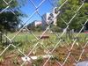

Arts And Culture
-
'Harlem West': Central Avenue comes to life to honor its rich, jazzy history
7/30/12, 11:22 a.m.
The 17th annual Central Avenue Jazz Festival was, for many attendees, an important remembrance of a rich musical and cultural history.
-
For trombonist, Central Avenue Jazz Festival is the intersection of history and music
7/29/12, 9:05 a.m.
Jazz trombonist Phil Ranelin will be performing at the Central Avenue Jazz Festival today. Even though Ranelin wasn't in LA during Central Avenue's jazz heyday, his passion for its history is what ties him to this festival.
-
12-year-old blues guitar phenom plays like 'an old soul'

7/27/12, 1:21 p.m.
Blues guitarist Ray Goren is described as a genius by his old-timer musical peers – and he's about to enter the seventh grade.
-
Etta James' son kicks off jazz festival with City Council performance
7/27/12, 10:26 a.m.
Etta James' son kicked off 2012's Central Avenue Jazz Festival with a performance at Friday morning's City Council meeting.
-
Spirit of jazz clubs revived during Central Avenue Jazz Festival

7/25/12, 6:14 p.m.
While the jazz clubs that once made Central Avenue the center for music in Los Angeles are now long gone, some South L.A. residents honor their memory at the annual Central Avenue Jazz Festival.
-
Exclusive video of the Diana Holling Band preparing for the Central Avenue Jazz Festival
7/25/12, 5:27 p.m.
The Diana Holling Band will perform at the Central Avenue Jazz Festival this weekend. In a previous interview, Holling said the festival will be her biggest gig yet.
-
Metro offers grand prizes for riders attending downtown LA park opening
7/20/12, 3:08 p.m.
Downtown L.A.'s Grand Park opens next week. Attendees who show their Metro pass have the chance to win gift certificates, hotel stays, theater tickets and more.
-
Singer terrified, ecstatic about performing at annual southside jazz festival
7/18/12, 1:06 p.m.
She says she got a late start, but Diana Holling is done doing the "mommy thing" and ready for her biggest gig yet at the 17th annual Central Avenue Jazz Festival.
-
Central Avenue jazz fest to feature musical tribute to late Etta James
7/16/12, 12:47 p.m.
This year's event takes place July 28 and 29 and revolves around jazz and soul musical performances.
-
Newton hosts weekend carnival on MLK Boulevard
6/24/12, 12:13 a.m.
Martin Luther King Jr. Boulevard turned into a carnival this past weekend. The festival, which runs until Sunday, raises money for LAPD youth programs.
About Us
OnCentral is a site for the neighborhoods around Central Avenue. It's a news site where we not only provide information, but put the power of storytelling in your hands. Sign up and you can share your story or help an existing story grow by adding in your perspective or corrections.
Follow OnCentral


- Most Viewed
- Most Commented